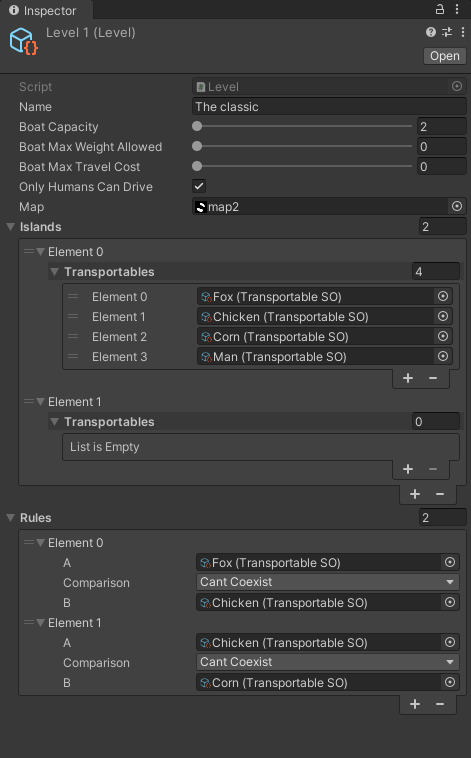

We're in the Same Boat
Engine:
Unity
Size of the team:
4
Time:
1 month
My role:
Game programmer and designer
This game was made for the Game Off 2022 hosted by GitHub. It did pretty well, thanks to the fact that it was very polished, and that we had a brilliant graphic designer on our team who didn't have any experience making art for games but did an amazing job anyways. We got the 23rd position overall.
- I implemented all of the game mechanics and logic of the game.
- I made a system to easily create puzzles with a set of characters and rules.
- I implemented a solver to automatically ensure that every level can be solved and get the optimal set of moves to complete it.
- I made a custom water shader.
- I procedurally animated the characters.
Gameplay
 Even though this game was originally built for PC, we knew that we wanted to bring it to smartphones,
where we think it would shine. So I built the controls around dragging and dropping and spent a lot of
time perfecting the feel of it. I iterated many times until I was happy with how smooth, intuitive, and
reliable the controls were.
Even though this game was originally built for PC, we knew that we wanted to bring it to smartphones,
where we think it would shine. So I built the controls around dragging and dropping and spent a lot of
time perfecting the feel of it. I iterated many times until I was happy with how smooth, intuitive, and
reliable the controls were. Having the option to undo a move is very important in a game like this. Having to restart the level
after making a mistake would be very frustrating for the players. So, from the beginning, the game logic
was designed to easily be able to undo and redo movements as many times as necessary.
Having the option to undo a move is very important in a game like this. Having to restart the level
after making a mistake would be very frustrating for the players. So, from the beginning, the game logic
was designed to easily be able to undo and redo movements as many times as necessary.Level design
I designed the levels, and to do that, I looked at the original puzzle and some popular variations. There are a few versions of the original crossing river riddle, each with new rules that completely change the game. The first levels are just an adaptation of these different versions. Same rules but with different characters.Once I had the rules implemented, I started building new levels mixing rules from different puzzles, and adding new characters. The result was that once the player had learned the basics, the possibilities were endless. So much so, that we are currently building an automatic puzzle generator capable of creating new levels by mixing the current ones.
 When creating new levels it's crucial to have a quick way to determine whether a level can be finished. If I tried to do it manually and found a level that I couldn't beat, I wouldn't be able to determine for sure if the difficulty was too high for me or if the level itself was impossible to solve. That's why I used machine learning, the A* algorithm to be concrete, to build a script that could solve any puzzle. This allows me to completely automate the process of designing levels, as well as find the optimal steps to solve any puzzle.